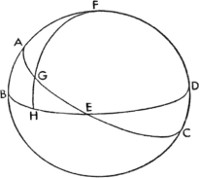
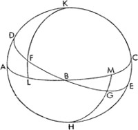
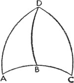

Şu ana dek kitabımızda yeryüzüne özgü üç harekete dair genel bir sunum yaptık; bu sunumda yıldızların bütün görünümlerini göstereceğimize dair de söz verdik. Sırasıyla tek tek parçalar üzerinde durarak ve gücümüz yettiğince inceleme yaparak bu sözü yerine getireceğiz. Evvela Yunanların Ó˘¯İÌÂÚÔÓ dediğini aktardığımız[92], bütünüyle ve doğrudan doğruya yeryüzü küresine özgü olarak değerlendirdiğimiz, tüm hareketler içinde en bilindik olan gündüz-gece deviniminden başlayacağız; sira bu devinimden bizzat aylar, yıllar ve başka birçok isimle anılan diğer zaman dilimleri, bütünün bir parçası olarak doğar. Buna istinaden gündüz-gece eşitsizliğine, Güneş'in, ekliptik takımyıldızlarının, burçların doğuşuna, batışına ve bu tipteki devinimlere dair az şey söyleyeceğiz: Zira birçok kişi bu konularda, (içerik olarak) bizim görüşlerimizle de uyumlu ve tutarlı bir şekilde yeteri kadar kalem oynattı. Onlar hareketsiz Dünya'ya ve evrenin dönüşüne dair kanıt öne sürerken, karşıt noktadan hareket eden bizlerin aynı hedefe yöneliyor olması hiç önemli değil: Zira karşılıklı olarak birbiriyle alakalı olan şeyler, birbirine tersten uyacak şekilde bir araya gelebilir. Bunun yanında onlardaki gerekli hiçbir şeyi de gözden kaçırmayacağız. Kuşkusuz yine de Güneş'in, yıldızların ve benzer cisimlerin doğuşu ve batışıyla ilgili konuşursak da kimse şaşırmasın; aksine şunu her daim zihninde tutan bizlerin herkes tarafından bilinen, alışıldık bir üslupla konuştuğu da bilinsin:
Dünya tarafından taşınan bizler için, Güneş de, Ay da geçer gider;
Belirir ve tekrar kaybolur yıldızlarda değişimler.
1. Çemberler ve İsimleri Üzerine
Ekvatorun, yeryüzü küresindeki günlük devinimin kutupları boyunca çizilen paralel çemberlerin en büyüğü olduğunu ve ekliptiğin[93], altında Dünya'nın bir yörüngede yıllık devinimini tamamladığı yıldızların ortasından geçen bir çember olduğunu söylemiştik. Fakat ekliptik, Dünya'nın eksenine ait eğim oranında ekvatoru meyilli bir şekilde geçtiğinden; günlük devinim rotasında, bu eğimin en uzak sınırlarında ekvatorun her iki ucuna dokunan iki çember çizer. Bu çemberlere dönence denir. Güneş, buralarda kendi yönünü belirler; yani yaz ve kış geçişlerinde Güneş buralarda yön değiştirir. Bundan dolayı, Dünya'nın dairesel hareketlerine dair kısa açıklamamızda da olduğu gibi, Kuzey çemberine yaz dönencesi Güney'e denk gelen diğer çembereyse kış dönencesi denmesi uygun görülmüştür. Bundan sonra Latinlerin finiens[94] dediği ufuk gelir. Zira bu, Dünya'nın bize görünen kısmıyla görünmeyen kısmı arasında bir sınır teşkil eder. Bütün yıldızlar onun üzerinde yükselişlerini gerçekleştiriyor görünür ve merkezi Dünya'nın yüzeyinde, kutup noktasıysa doğrudan başucu noktasındadır. Fakat Dünya'yı göklerin uçsuz bucaksızlığıyla karşılaştırmak imkânsız olduğu için bizim hipotezimize göre göklerin büyüklüğü yanında Güneş ile Ay arasındaki uzaklık bile tam olarak anlaşılamaz; ufuk çemberi, –tıpkı başlangıçta gösterdiğimiz gibi– Dünya'nın merkezinden geçiyormuşçasına, gökleri ikiye bölüyor gibi görünür. Fakat ufuk ekvatorla eğim yaptığından, onun her iki ucunda ikiz, paralel çemberlere –yani her daim görünen yıldızların kuzey çemberine ve hiçbir zaman görünmeyen yıldızların güney çemberine– dokunur. Proclus ve Yunanlar tarafından ilk çembere arcticus[95] ikincisine ise antarcticus[96] denmiştir; bunlar ufkun eğimine veya ekvator kutbunun yüksekliğine göre daha büyük ya da daha küçük olur. Meridyen çemberi ufkun ve ekvatorun kutuplarından geçer ve bundan dolayı her iki çembere dik olarak iner. Güneş'in ona ulaşması bize öğleni ve gece yarısını verir; fakat merkezleri Dünya'nın yüzeyinde bulunan bu iki çember, yani ufuk ve meridyen, bütünüyle Dünya'nın hareketine ve birtakım yerlerdeki görüş açımıza uyar. Zira göz her yerde, her taraftan görebildiği bütün nesneler küresinin merkezi durumuna gelir. Dahası, Dünya'nın ebatlarıyla ilgili olarak kozmografide daha açık bir şekilde gösterileceği gibi, Dünya yüzeyinde var olduğu kabul edilen tüm çemberler kendi kopyası ve görüntüsü şeklinde çemberler çizer. Ve diğerlerini belirleme ve isimlendirmede birçok farklı tutum olmasına rağmen, bu çemberlerin hiç olmazsa birer ismi vardır.
2. Ekliptiğin Eğikliği, Dönencelerin Uzaklığı ve Bunların Nasıl Hesaplandığı Üzerine
O halde ekliptik, dönencelerin arasında ve ekvatora eğik bir şekilde geçtiğinden; artık lüzumlu bir şekilde dönenceler arasındaki uzaklığın ne kadar olduğunu ve ekvatorla ekliptik arasındaki açının ne olduğunu incelemeye başlamamız gerektiğini düşünüyorum. Bunu, çalışmamızın en iyi şekilde sonlandırılabilmesini sağlayacak kimi aletlerin yardım ettiği duyumuzla kavrayabilmek için evvela tahtadan ya da tahta hava koşullarında değişikliğe uğrayıp gözlemciyi yanlış yönlendirebileceğinden, tercihen daha katı bir maddeden, örneğin taştan veyahut metalden yapılmış bir gönyeye ihtiyaç duyarız. Bir yüzü çok dikkatli bir şekilde düzleştirilmiş ve çeşitli kesitlere ayrılabilecek ölçüde üç ya da dört cubitum[97] uzunluğunda olmalı. Buna göre köşelerden birinin merkez, kenarlardan birinin de yarıçap olarak alındığı bir çeyrek daire çizilsin ve bu çeyrek daire 90ºlik eşit açılara bölünsün; her bir açı da kendi içinde 60 dakikaya (ya da başka bir rakam da kullanılabilir) bölünsün. Daha sonra tornada kusursuz şekilde döndürülmüş, dikilmiş olan silindirik saptayıcı merkez noktasına konarak, yüzeye dik ve ondan biraz uzakta duracak şekilde sabitlensin, yani aradaki mesafe aşağı yukarı bir parmak kalınlığında olsun. Bu şekilde bir düzenek hazırlanınca yapılacak bir sonraki şey, herhangi bir yerde bir eğim olmasın diye yer düzleştirici ya da bir hidroskop yardımıyla olabildiğince dikkatli bir şekilde, ufuk düzleminde yer alan bir zemin üstünde meridyen çizgisini göstermektir. Zeminin bir parçasına çember çizilmeli ve onun merkezine de bir silindir dikilmeli. İncelememizi yapıp gün ortasından önceki bir zamanda silindirin gölgesinin ucunun çember yayına dokunduğu yeri saptayacağız. Aynı şeyi öğleden sonra da yapacağız; sonra işaretlemiş olduğumuz iki nokta arasında uzanan çemberin yayını keseceğiz. Böylece merkezden kesit noktası boyunca çizilen düz çizgi bize hatasız bir şekilde güneyi ve kuzeyi göstermiş olacak. Bu nedenle düzenek düzleminin yüzeyi, zeminin bu bölümünde merkez olarak bulunmalı, güneye yönelik çeyreğin merkezi buna dik olarak sabitlenmeli, zira merkezden çıkan düşey çizgi meridyen çizgisine tam olarak dik açıyla inecektir. Bu yolla düzenek yüzeyi meridyen çemberini gösterecektir. Böylelikle yaz ve kış gündönümlerinin öğle vaktindeki Güneş'in gölgesi, işaretçinin ya da silindirin gösterdiği şekilde çeyreğin merkezinden hareketle gözlenecektir. Kimi işaretler çeyrek yay üstünde belirecektir; bu sayede gölgenin yeri de kesin olarak elde edilebilir. Ve biz olabildiğince kesin bir şekilde gölgenin merkezini derece ve dakika olarak kaydedebiliriz. Öyle ki bunu yaptığımızda belirlenen gölgeler arasındaki yayın yanı sıra yaz ve kış gündönümlerine ait gölgeler de bulunacak ve bize ekliptiğin toplam eğimini ve dönenceler arasındaki uzaklığı da verecektir. Yayın yarısının öğrenilmesiyle dönencelerin ekvatordan uzaklığını da elde edeceğiz ve ekvatorla ekliptik arasındaki eğim açısının ne kadar olduğu da ortaya çıkacaktır. Ptolemaeus belirtilen kuzey ve güney sınırları arasındaki aralığı –bir çember 360° iken– 47°42'40'' olarak hesaplamıştı; onun bulduğu bu sonuç kendisinden önce yaşamış olan Hipparchus[98] ve Eratosthenes[99] tarafından da gözlemlenmişti ve bütün çember 83 parça içerirken burada 11 parça vardı. Buradan hareketle 23°51'20''lik yayın yarısının dahil olduğu çemberin 360° olması dönencelerin ekvatordan uzaklığını ve ekliptikle birlikte kesit açısının ne kadar olduğunu göstermektedir. Bu yüzden Ptolemaeus bütün bu verilerin değişmez olduğuna ve hep böyle kalacağına inanmıştı. Fakat bu uzaklıkların o zamandan bu zamana sürekli azaldığı görülmüştür. Dönenceler arasındaki uzaklığın 46°58'dan fazla olmadığı ve kesit açısının da 23°29' olduğu da bizler ve bazı çağdaşlarımız tarafından bulunmuştur. O halde ekliptik eğiminin sabit olmadığı yeterince açıktır. Hatta onun hiç 23°52'dan daha büyük ve 23°28'dan da küçük olamayacağını aşağıda yeteri kadar doyurucu ve akla yatkın bir açıklamayla göstereceğiz.
3. Ekvatorun, Ekliptiğin ve Meridyenin Kesişim Açıları ve Yaylarıyla Yükselimlerin ve Açılımların Belirlenmesi ve Bu Yaylarla Açıların Hesaplanması Üzerine

Buna göre ufukla ilgili olarak Dünya'nın bölgelerinin doğuşu ve batışına[100] dair konuştuğumuz gibi, meridyen dairesinin de gökleri ikiye böldüğünden bahsediyoruz. Yirmi dört saatlik süre boyunca bu daire hem ekliptikle hem de ekvatorla kesişir ve her iki çemberi de ilkbahar ve sonbahar kesişiminde bölerek ayırır; daha sonra dairenin çevresi de bu iki çember tarafından kesilen yayla bölünür. Bütün bunlar büyük daireler olduğundan bir küresel dik üçgen oluşturur; çünkü meridyen dairesi kutup noktalarından çizilen ekvatoru dik açıyla keser. Bu durumda meridyen dairesinin yayı ya da ekvator kutupları boyunca geçen ve bu şekilde kesilmiş bir çember yayı, ekliptik parçasının yükselimi olarak adlandırılır; ekvator üzerinde buna karşılık gelen yay da aynı anda ekliptikte de ortaya çıkan açılım[101] olarak tanımlanır. Bütün bunlar bir dışbükey üçgende kolayca gösterilir. Buna göre hem ekvatorun hem de ekliptiğin kutup noktalarından geçen, birçoklarının Colurus solstitiorum[102] dediği bir ABCD dairesi olsun; ekliptiğin yarım çemberi AEC; ekvatorun yarım çemberi BED; ilkbahar ekinoksu E noktasında, yaz gündönümü A noktasında ve kış gündönümü C noktasında olsun.
Yine günlük devinimin kutbu olarak F alınsın; ekliptikte EG yayı 30°ye eşit olsun ve dairenin FGH çeyreği tarafından kesilsin. Bu durumda, EGH üçgeninde EG kenarı 30°ye eşit olduğu ve GEH açısının da bulunacağı açıktır; zira en büyük AB yükselimiyle uyumlu olarak –dört dik açı 360°yi verirken– GEH açısı en az 23°28', GHE açısı da 90° olur. Buna göre küresel üçgenlere dair dördüncü teorem sayesinde EGH üçgeninin kenarları ve açıları bulunmuş olur. Zira gösterildiği gibi, EG'nin iki katını ayıran kirişin GH'nin iki katını ayıran kirişe oranı, AGE'nin iki katını ayıran kirişin ya da kürenin çapının AB'nin iki katını ayıran kirişe oranına eşittir. Ve bunların yarıları da aynı orandadır. Bu yüzden AGE'nin iki katını ayıran kirişin yarısı yarıçapa; o da 100.000 birime eşittir. AB'nin iki katını ayıran kirişin yarısı 39.822 birime; EG'nin iki katını ayıran kirişin yarısı ise 50.000 birime eşittir. Bu dört sayı orantılıysa, bu sayede bulunan sonuç da uçlardan elde edilen sonuca eşit olur; buna göre GH'nin iki katını ayıran kirişin yarısı 19.911 birime eşittir ve buradan hareketle, tablo yardımıyla, GH yayının 11°29'ya eşit olduğu çıkar; o da EG diliminin yükselimidir; FG kenarı 78°31'ya, AG kenarı ise 60°ye eşittir. Bunlar da çeyreğin geri kalan kısımlarını oluşturur ve FAG açısı 90°dir. Aynı şekilde FG'nin iki katını ayıran kirişin yarısının AG'nin iki katını ayıran kirişin yarısına oranı FGH'nin iki katını ayıran kirişin yarısının BH'nin iki katını ayıran kirişin yarısına oranına eşittir. Bu durumda üç kiriş bulunmuş olur, dördüncüsü de bulunacaktır; yani BH yayı 62°6'dır; bu da yaz gündönümündeki açılımdır; dahası HE de ilkbahar ekinoksundan ötürü 27°54'ya eşittir. Benzer şekilde FG kenarı 78°31'; AF kenarı 64°30' ve AGE 90°dir. Bu durumda AGF ve HGE dik açılarsa; AGF açısı, HGE açısına, o da 63°29,5'ya eşittir. Diğerlerini de bu örnekteki gibi yapacağız; fakat ekliptiğin dönencelere dokunduğu zamanlardaki burçlarda meridyen dairesinin ekliptiği dik açıyla kestiğini de göz ardı etmemeliyiz; zira söylediğimiz gibi, meridyen dairesi onu kutup noktalarından keser. Fakat gündönümü noktalarında meridyen, ekliptiğin eğiminin oluşturduğu açıyla dik açıdan daha küçük bir açı yapar. Buna göre ekliptiğin en küçük eğimiyle uyumlu olması için, meridyenin 66°32'lık bir açı oluşturması gerekir. Dahası üçgenlerin eşit açılarının ve eşit kenarlarının, ekliptiğin ekinoks ya da gündönümü noktalarından alınan eşit yaylarına uyduğunu da akılda tutmalıyız. Bu yolla ABC ekvatoral yayını ve ekinoksun gerçekleştiği B noktasıyla kesişen BDE ekliptiğini çizersek; ayrıca FB ile BG yaylarını ve günlük devinimin kutupları boyunca çizilen dairenin iki çeyreği olan KFL ve HGM'yi de eşit olarak alırsak, FLB ve BMG üçgenleri ortaya çıkacaktır, ki bunlarda BF kenarı BG kenarına; FLB açısı GBM açısına ve FLB açısı GMB açısına, o da 90°ye eşittir.


Bu yüzden küresel üçgenlerle ilgili olan altıncı teorem sayesinde, kenarlar ve açılar birbirine eşit olur. Buna göre FL yükselimi, GM yükselimine; LB açılımı BM açılımına ve LFB açısı MGB açısına eşittir. Gündönümü noktasından çizilen eşit yayların varsayımına dair de aynı yol izlenecektir; yani AB ve BC, B temas noktasının farklı taraflarında; ondan eşit uzaklıktadır.
Buna göre DA ve DB yayları, ekvatorun kutbundan çizildiği için ABD ve DBC üçgenleri benzer olacaktır. O halde AB tabanı BC tabanına eşit; BD kenarı da ortaktır. ABD açısı CBD açısına, o da 90°ye eşittir. Bu yüzden küresel üçgenlerle ilgili sekizinci teorem sayesinde bunların eşit kenarlı ve eş açılı olduğu gösterilebilir. Buradan ekliptiğin bir çeyreğinde uzanan bu açılarla yayların tüm dairedeki diğer çeyreklerle uyumlu olduğu sonucu çıkarılır. Bunları tablolara örnek olarak ekleyeceğiz. İlk sütunda ekliptiğin dereceleri, ikinci sütunda bu derecelere karşılık gelen yükselimler, üçüncü sütunda ise ekliptiğin en büyük eğime ulaştığı anda meydana gelen yükselimle belirli yükselimler arasındaki farkı gösteren dakikalar yer alacak, ki bu farklılıkların en büyüğü 24'dır. Aynısını, meridyen açıları ve açılımlar tablosunda da yapacağız. Bu yüzden ekliptiğin eğiminin değişimiyle değişecek tüm verilerin değişmesi gerekir. Dahası, açılımlarda 0,1'lik zamanı aşmayan ve bir saatlik zaman dilimindeyse sadece 0,00666'lık bir zaman oluşturan son derece küçük farklar bulunur. Eskiler, ekliptiğin artan aralıklarıyla birlikte artan ekvatorun aralıklarına tempora[103] adını vermişler. Bu dairelerden her biri, hep söylediğimiz gibi, 360 parçadan oluşur. Fakat arasında ayrım yapabilmek için eskilerin çoğu ekliptiğin bölümlerine gradus[104] ekvatorunkilere ise tempora demiştir ve biz de çalışmanın geri kalan kısmında aynısını yapacağız. O halde aradaki farklılık ihmal edilebilir ölçüde küçükse, onu ayrı bir sütunda göstermek gibi ayrı bir çaba sarf etmeyeceğiz. Böylece bu tablolar ekliptiğin başka bir eğimine uydurulabilir olacak; ekliptiğin en büyük ve en küçük eğimi arasındaki farklılık oranı benzerlik gösteriyorsa doğru düzeltmeleri yapabiliriz. Yani 23°34'nın eğimiyle ekliptik boyunca ekvatordan 30ºlik bir mesafeyle hareket eden bir yükselimin ne kadar büyük olduğunu bilmek istersek, bunu tabloda yükselimler sütununda 11°29', farklar sütunundaysa 11' olarak buluruz. Bu 11', söylediğimiz gibi, 23°52'lık en büyük eğim durumunda tümüyle eklenebilir. Fakat eğim 23°34' olarak belirlenmişti; o halde bu en küçük eğimden 24'nın dörtte biri yani 6' kadar daha büyüktür. Bu durumda 3'nın 11'ya oranı, aşağı yukarı 6'nın 24'ya oranına eşittir. Ayrıca 11°29'ya 3' eklediğimde ekvatordan 30°lik mesafede bulunan ekliptik yayının yükselimi olan 11°32'ya erişmiş olacağım. Aynı şey meridyen açıları ve açılımlar tablosunda da yapılabilir; fakat farkları açılımlar bölümünde her daim eklemeli, meridyen açıları bölümündeyse çıkarmalıyız; ancak bu şekilde bütün veriler doğru ve zamanla uyumlu olabilir.